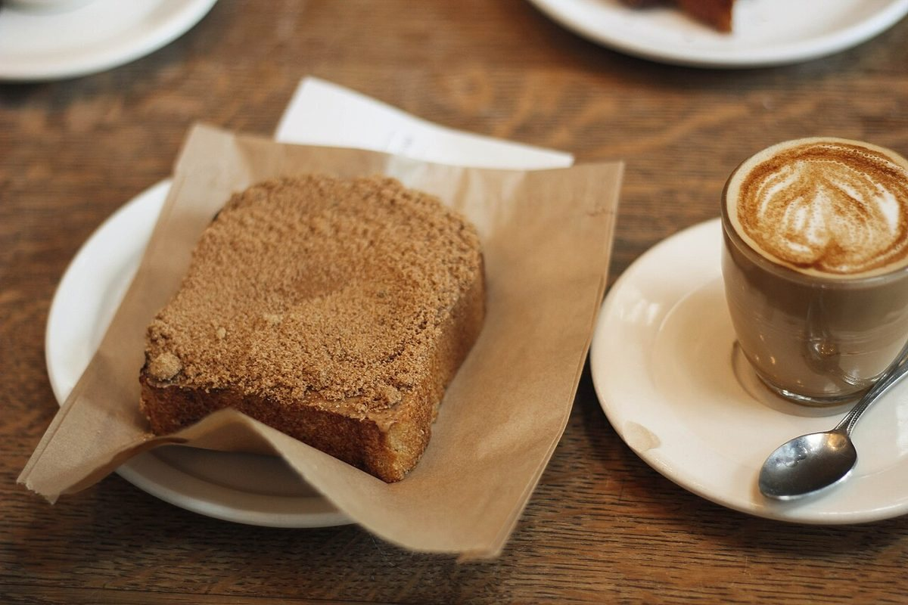
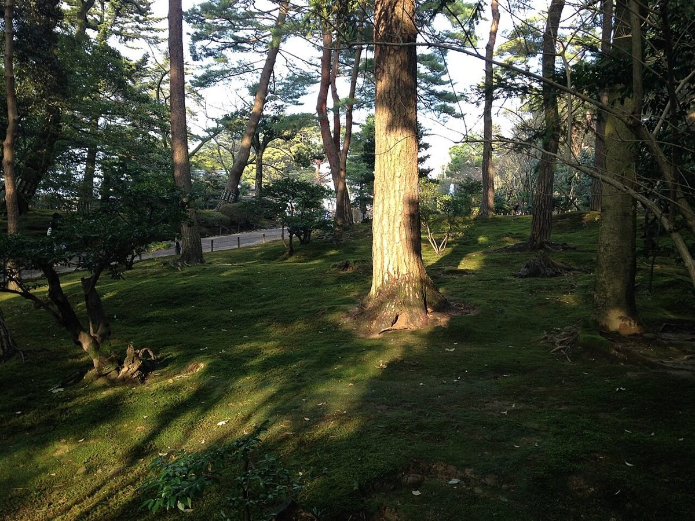
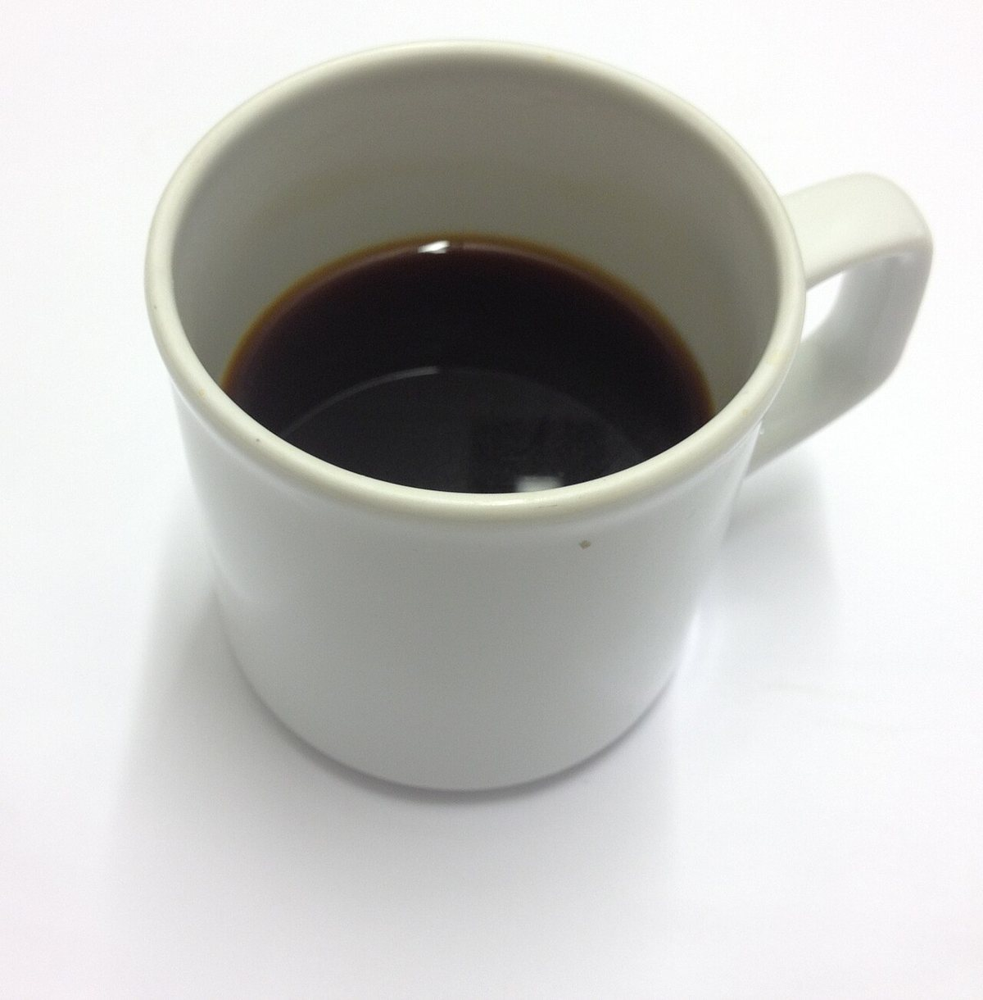

滋賀県高島市今津町
Cafe & Studio Chi-no
滋賀県高島市今津町にあるお店「Cafe & Studio Chi-no」の、ご紹介ページの試作です。お店の詳しい情報は準備中で、わかる範囲の住所・電話番号・Instagramをまとめています。
サイトの切り口は制作側の案で、「ゆっくり立ち寄れる場所」を静かな色と大きな写真で表しています。お店ご自身の考えとは異なる場合があります。


Guideご案内
01メニューメニューや料金は準備中です。→ 02口コミイメージ例のページです。実際の声ではありません。→ 03お店についてわかっている情報と、準備中の項目。→ 04アクセス住所・地図・電話番号。→

Infoお店の情報
- 住所
- 滋賀県高島市今津町今津1587-3
- 電話
- 0740-20-1137
- @cafestudio_chino
- 営業時間
- 準備中(お問い合わせください)
- 定休日
- 準備中(お問い合わせください)
写真はフリー素材のイメージです。店舗の実際の写真ではありません。他地域で撮影されたものや、撮影地が不明のものを含みます。